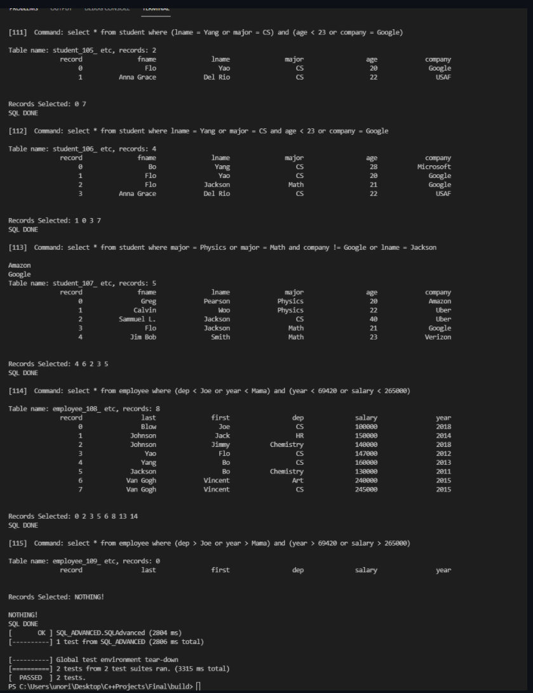
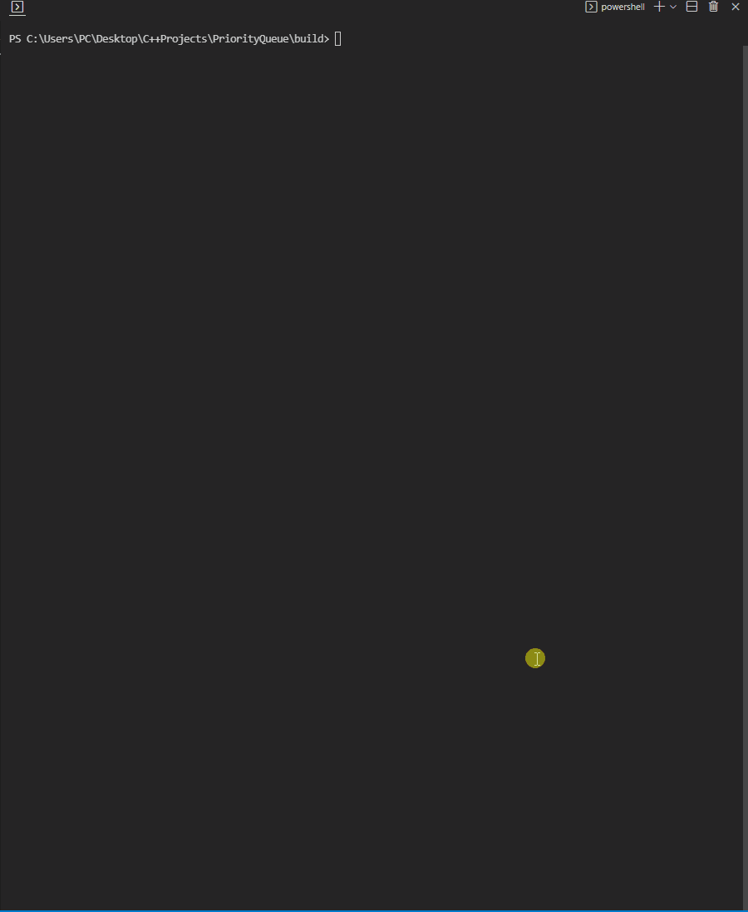
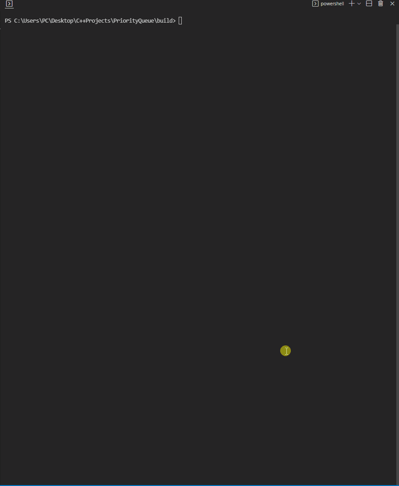

My first ever major C++ Project. Screen updates with every move, with a customizable map and interface. Made 2 versions, one is repl.it specific and the other is via any IDE.
The @ sign is pacman while the $ sign are the ghosts. * are the walls
More GTesting. Created a matchmaker that utilized tuples and logic design. Matched randomly generated profile based on attributes, location, and other characteristics.
Datastructures. Created a file and string tokenizer with the use of state machines. Determined what type of string was inputted. Can be user input or txt file
Datastructures. Utilized Table, Parser, Tokenizer, Priority -- basically everything I've learned thus far. It was my final project for my C++ path. It comes with a user interface. It can create a database, read off of one, and run basic SQL commands.
Can read commands from file or from input. Has included tutorial when running the program

Game/Web Scrapper
Currently a work in progress. Utilizing SDL2, SFML, and other frameworks in order to create a working 2D game.
Also working on a web scrapper that pulls from Canvas.edu and implements due dates into a calendar.

 
